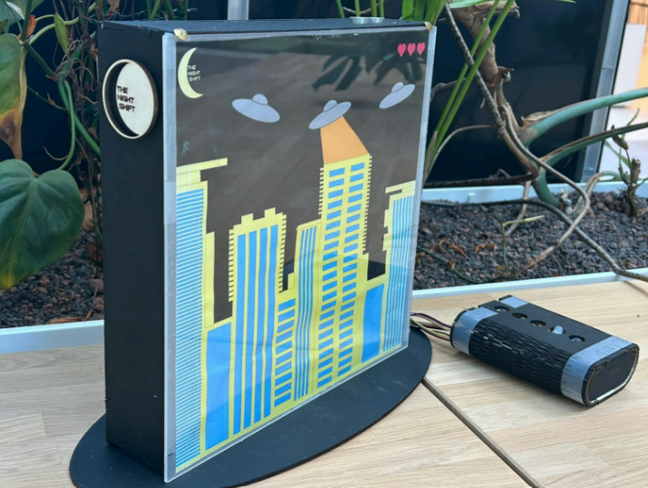
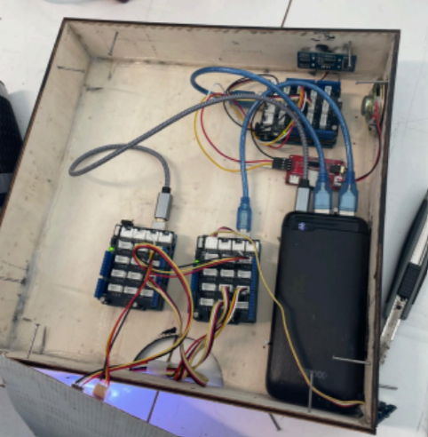
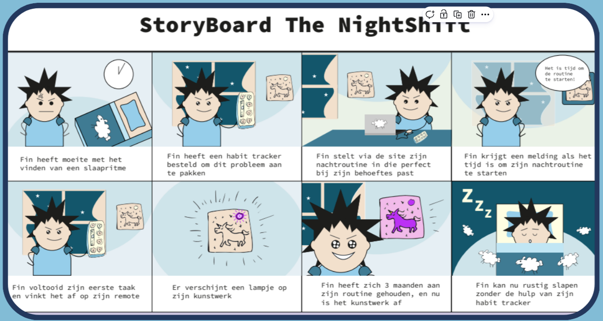

NightShiftA tangible habit tracker.



This was an eight-week group project where our goal was to help people with ADHD build a calmer, more consistent bedtime routine. We started with a lot of research before jumping into any solutions. Through interviews and some digging into existing studies, we found that a lot of people with ADHD struggle with racing thoughts and unfinished tasks right before bed, which makes it hard to actually wind down.
That's how NightShift came about: a physical habit tracker that turns finishing your daily tasks into a small bedtime ritual. Every time you tick something off, you press a button on a little remote and a light switches on somewhere on a lit-up city skyline artwork. Task by task the skyline fills up, so you get a real sense of progress instead of just crossing things off a boring list. We leaned into that on purpose: a glowing skyline is just more satisfying to look at than a checklist, and it turns something functional into something people actually want to interact with before bed.
Getting there took a lot of back and forth. We used pretty much every brainstorming method we could think of: empathy maps, customer journeys, affinity diagrams, morphological charts, "how might we" questions, even some weirder ones like tarot cards of tech, and kept testing ideas early instead of just running with our first concept.
Once we landed on a concept, we moved into prototyping, both digital and physical. A big chunk of the physical build came from laser-cutting the enclosure ourselves, and we wired it up with Arduino so every button press actually did something. Getting the hardware and the UX to work together was probably the most challenging (and most fun) part of the whole project.
Working as a team on something this hands-on taught me a lot about communication: presenting ideas, taking feedback from classmates and teachers, and actually using it instead of just nodding along. This project gave me real experience with physical computing on top of the usual UX process, and it reminded me how much better a product gets when you keep testing it with real people instead of trusting your own assumptions.